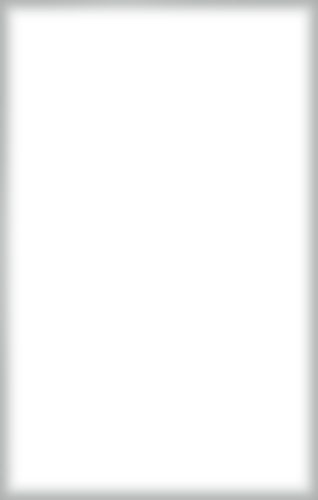

No Rats
VIOLATORS WILL BE FOUND OUT
Mr. C’s table. Knock first.
The Statiescops’ side
Academy fish and chips11.95
White fish in lager batter, chips, minted mushy peas.
Staties’ steak tips14.95
Marinated sirloin, grilled onions, baked potato.
Costigan’s cranberry2.50
Lime, orange, soda, crushed ice. A natural diuretic.
The Crewcrooks’ side
Mr. C’s lobsterMKT
Split and broiled, drawn butter. Robe optional.
Boston cream pie4.95
Sponge, vanilla custard, ganache. Nobody talks.
Irish stout4.75
Pulled slow, settled, topped. By the pint.
Our chowder is a product of its environment. Prices subject to change.
West Broadway, Mass. 02127. Form 2006. Rats will be served last.
West Broadway, Mass. 02127. Form 2006. Rats will be served last.
